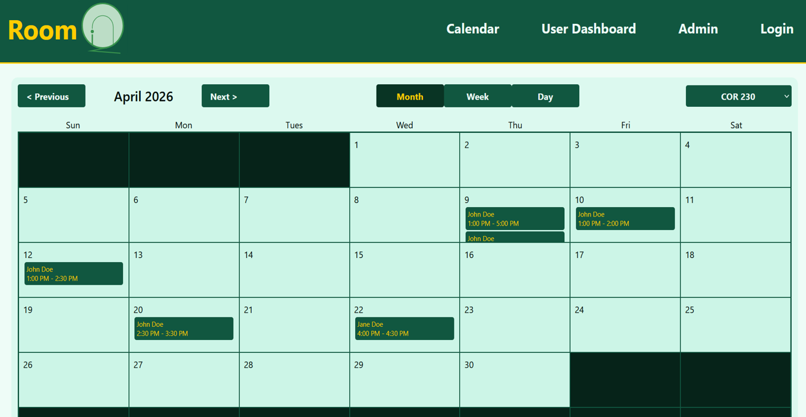
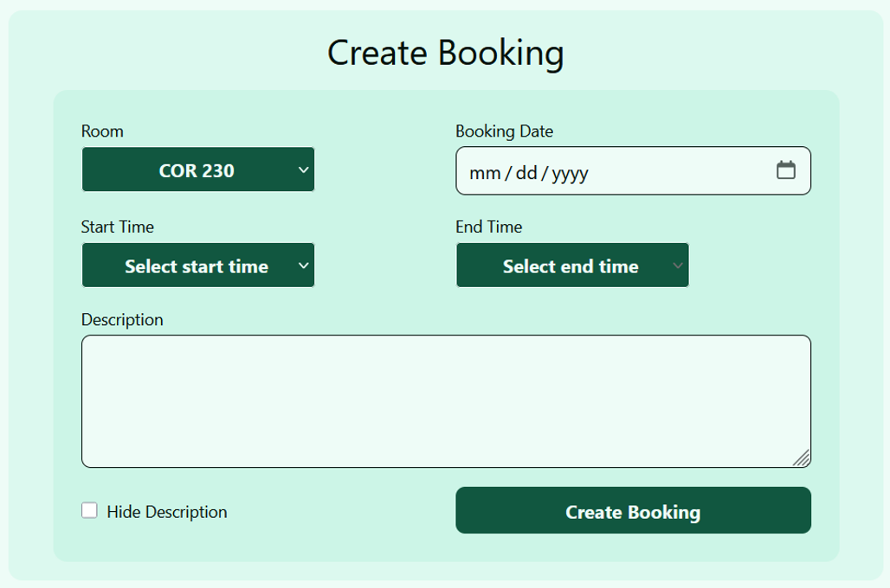
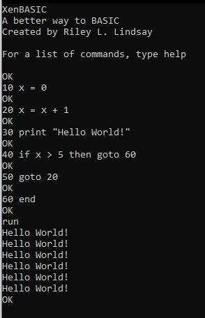
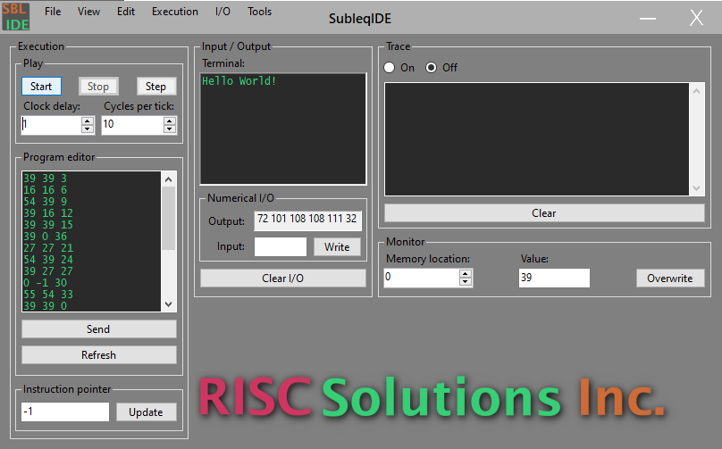

Projects
Below are projects I have created for school or entertainment since I began college, arranged in reverse-chronological order.
RoomIQ
RoomIQ is a web-based conference room-scheduling system that allows users to book conference rooms from anywhere on the company network. RoomIQ uses an iPad kiosk at the door of each conference room with the website loaded. The main page contains a QR code to scan for users to access on their own devices.
Screenshots


Skills
GitHub Repository
DjangoLing
XenBASIC
XenBASIC is a 1980s-style BASIC interpreter written in C++. With the exception of the use of line numbers, this adaptation of the language is based on SmileBASIC. This project was originally created as a final project for Programming II at ATU, Ozark Campus, but the final project assignment was removed, turning this into a hobby project.
Unlike many traditional BASIC interpreters, XenBASIC utilizes a compiler which converts high-level BASIC instructions into a specialized bytecode created specifically for this project. However, unlike many traditional compilers, XenBASIC compiles program lines individually, so that each line of code entered has its own dedicated series of bytecode instructions.
Screenshots

Skills
SubleqIDE
SubleqIDE is a platform for running and assembling Subleq programs. Subleq (SUBtract and branch if Less than or EQual to 0) is a One Instruction Set Computer, meaning that there is only one command in the language. Complex functionality requires chaining many of these chaining many of these commands together.
This project was created as my final project for Programming I at ATU, Ozark Campus, where we were tasked with creating a fictional company and writing a program for that company.
Screenshots
